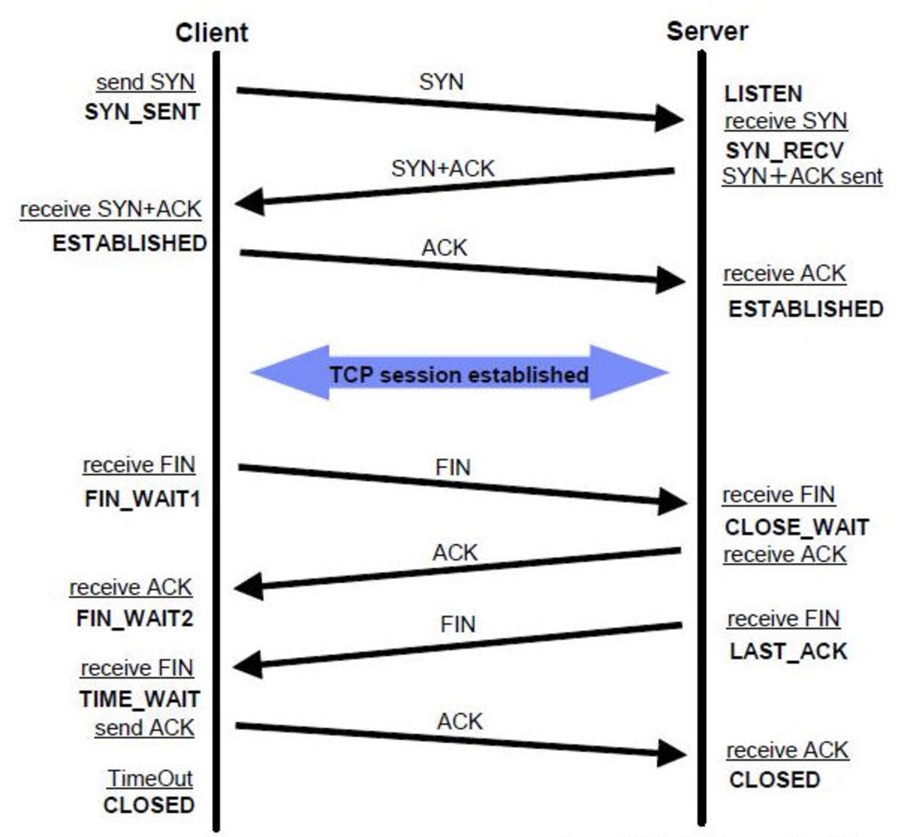

网络其实大体分为两块，一个TCP协议，一个HTTP协议，只要把这两块以及相关协议搞清楚，一般问题不大。
1、OSI与TCP/IP各层的结构与功能，都有哪些协议
（1）OSI七层模型
OSI中的层 功能 TCP/IP协议族
应用层 文件传输，电子邮件，文件服务，虚拟终端 TFTP，HTTP，SNMP，FTP，SMTP，DNS，Telnet
表示层 数据格式化，代码转换，数据加密 没有协议
会话层 解除或建立与别的接点的联系 没有协议
传输层 提供端对端的接口 TCP，UDP
网络层 为数据包选择路由 IP，ICMP，RIP，OSPF，BGP，IGMP
数据链路层 传输有地址的帧以及错误检测功能 SLIP，CSLIP，PPP，ARP，RARP，MTU
物理层 以二进制数据形式在物理媒体上传输数据 ISO2110，IEEE802，IEEE802.2
(2)TCP/IP五层模型的协议
应用层 ,传输层 ,网络层 ,数据链路层 ,物理层
2、TCP与UDP的区别
1.基于连接与无连接；
2.对系统资源的要求（TCP较多，UDP少）；
3.UDP程序结构较简单；
4.流模式与数据报模式 ；
5.TCP保证数据正确性，UDP可能丢包，TCP保证数据顺序，UDP不保证。
3、TCP报文结构
TCP的包头结构：
源端口 16位
目标端口 16位
序列号 32位
回应序号 32位
TCP头长度 4位
reserved 6位
控制代码 6位
窗口大小 16位
偏移量 16位
校验和 16位
选项 32位(可选)
这样我们得出了TCP
包头的最小长度，为20字节
4、TCP的三次握手与四次挥手过程，各个状态名称与含义，TIMEWAIT的作用
(1) TCP三次握手过程
1. 主机A通过向主机B发送一个含有同步序列号的标志位的数据段给主机B,向主机B请求建立连接，通过这个数据段，主机A高速主机B两件事:我想要和你通信；你可以用那个序列号作为起始数据段来回应我。
2. 主机B收到主机A的请求后，用一个带有确认应答的(ACK)和同步序列(SYN)标志位的数据段响应主机A,也告诉主机A两件事：我已经收到你的请求了，你可以传输数据了；你要用那个序列号作为起始数据段来回应我。
3. 主机A收到这个数据段后，再发送一个确认应答(ACK),确认已收到主机B的数据段：我已收到回复,我现在要开始传输实际数据了 这样3次握手就完成了,主机A和主机B 就可以传输数据了。
(2) 3次握手的特点
没有应用层的数据
SYN这个标志位只有在TCP建产连接时才会被置1
握手完成后SYN标志位被置0
(3) TCP建立连接要进行3次握手,而断开连接要进行4次
1. 当主机A完成传输后，将控制位FIN置1，提出停止TCP连接的请求。
2. 主机B收到FIN后对其作出响应，确认这一方向上的TCP连接将关闭，将ACK置1
3. 由B端再提出反方向的关闭请求，将FIN置1
4. 主机A对主机B的请求进行确认，将ACK置1，双方向的关闭结束。
由TCP的三次握手和四次断开可以看出,TCP使用面向连接的通信方式,大大提高了数据通信的可靠性,使发送数据端 和接收端在数据正式传输前就有了交互,为数据正式传输打下了可靠的基础。
(4) 名词解释
ACK：TCP报头的控制位之一,对数据进行确认.确认由目的端发出,用它来告诉发送端这个序列号之前的数据段 都收到了.比如,确认号为X,则表示前X-1个数据段都收到了,只有当ACK=1时,确认号才有效,当ACK=0时,确认号无效,这时会要求重传数据,保证数据的完整性。
SYN：同步序列号,TCP建立连接时将这个位置1。
FIN：发送端完成发送任务位,当TCP完成数据传输需要断开时,提出断开连接的一方将这位置1。
客户端与服务器端建立TCP/IP连接后关闭SOCKET后，服务器端连接的端口 状态为TIME_WAIT
(5) 是不是所有执行主动关闭的socket都会进入TIME_WAIT状态呢？
有没有什么情况使主动关闭的socket直接进入CLOSED状态呢？
主动关闭的一方在发送最后一个ack 后
就会进入TIME_WAIT 状态 停留2MSL（max segment lifetime）时间
这个是TCP/IP必不可少的，也就是“解决”不了的。
也就是TCP/IP设计者本来是这么设计的
主要有两个原因
<1>.防止上一次连接中的包，迷路后重新出现，影响新连接
（经过2MSL，上一次连接中所有的重复包都会消失）
<2>.可靠的关闭TCP连接
在主动关闭方发送的最后一个ACK(fin),有可能丢失,这时被动方会重新发fin,如果这时主动方处于CLOSED状态,就会响应rst而不是ACK。所以主动方要处于TIME_WAIT状态，而不能是CLOSED。TIME_WAIT并不会占用很大资源，除非受到攻击。还有，如果任何一方send或recv超时，就会直接进入CLOSED状态。

5、TCP拥塞控制
<1>.慢开始与拥塞避免
<2>.快重传和快恢复
<3>.随机早期检测RED
1.慢开始与拥塞避免
发送报文段速率的确定，既要根据接收端的接收能力，又要从全局考虑不要使网络发生拥塞，这由接收窗口和拥塞窗口两个状态量确定。接收端窗口(Reciver Window)又称通知窗口(Advertised Window)，是接收端根据目前的接收缓存大小所许诺的最新窗口值，是来自接收端的流量控制。拥塞窗口(Congestion Window)是发送端根据自己估计的网络拥塞程度而设置的窗口值，是来自发送端的流量控制。
慢启动原理：
<1>. 当主机开始发送数据时，如果立即将较大的发送窗口的全部数据字节都注入到网络中，那么由于不清楚网络的情况，有可能引起网络拥塞。
<2>. 比较好的方法是试探一下，即从小到大逐渐增大发送端的拥塞控制窗口数值。
<3>. 通常在刚刚开始发送报文段时可先将拥塞窗口cwnd设置为一个最大报文段的MSS的数值。在每收到一个对新报文段确认后，将拥塞窗口增加至多一个MSS的数值,当rwind足够大的时候，为了防止拥塞窗口cwind的增长引起网络拥塞，还需要另外一个变量-慢开始门限ssthresh。
拥塞控制具体过程为：
<1>. TCP连接初始化，将拥塞窗口设置为1
<2>. 执行慢开始算法，cwind按指数规律增长，直到cwind==ssthress开始执行拥塞避免算法，cwnd按线性规律增长
<3>. 当网络发生拥塞，把ssthresh值更新为拥塞前ssthresh值的一半，cwnd重新设置为1，按照步骤<2>执行。
2. 快重传和快恢复
一条TCP连接有时会因等待重传计时器的超时而空闲较长的时间，慢开始和拥塞避免无法很好的解决这类问题，因此提出了快重传和快恢复的拥塞控制方法。
快重传算法并非取消了重传机制，只是在某些情况下更早的重传丢失的报文段(如果当发送端接收到三个重复的确认ACK时，则断定分组丢失，立即重传丢失的报文段，而不必等待重传计时器超时)。慢开始算法只是在TCP建立时才使用。
快恢复算法有以下两个要点：
<1>. 当发送方连续接收到三个重复确认时，就执行“乘法减小”算法，把慢开始门限减半，这是为了预防网络发生拥塞。
<2>. 由于发送发现在认为网络很可能没有发生拥塞，因此现在不执行慢开始算法，而是把cwnd值设置为慢开始门限减半后的值，然后开始执行拥塞避免算法，使拥塞窗口的线性增大。
6、TCP滑动窗口与回退N针协议
只有在接收窗口向前滑动时(与此同时也发送了确认)，发送窗口才有可能向前滑动。收发两端的窗口按照以上规律不断地向前滑动，因此这种协议又称为滑动窗口协议。
当发送窗口和接收窗口的大小都等于1时，就是停止等待协议。
当发送窗口大于1，接收窗口等于1时，就是回退N步协议。
当发送窗口和接收窗口的大小均大于1时，就是选择重发协议。
协议中规定，对于窗口内未经确认的分组需要重传。这种分组的数量最多可以等于发送窗口的大小，即滑动窗口的大小n减去1(因为发送窗口不可能大于(n-1),起码接收窗口要大于等于1)。
7、Http的报文结构
HTTP请求报文由3部分组成(请求行+请求头+请求体)

请求例子
POST /meme.php/login HTTP/1.1
HOST:114.215.86.90
Cache-Control:no-cache
tel=13637 & password=123456
响应例子
HTTP/1.1 200 OK
Date:Sat
{"status":202}
8、Http的状态码含义
响应码由三位十进制数字组成，它们出现在
响应码分为五种类型，由它们的第一位数字表示：
1.1xx:信息，请求收到，继续处理
2.2xx：成功，行为被成功地接受,理解和采纳
3.3xx：重定向，为了完成请求，必须进一步执行的动作
4.4xx：客户端错误，请求包含语法错误或者请求无法实现
5.5xx：服务器错误，服务器不能实现一种明显无效的请求
9、Http1.1和Http1.0的区别
<1>. HTTP/1.0协议使用非持久连接，即在非持久连接下，一个TCP连接只传输一个Web对象；
<2>. HTTP/1.1默认使用持久连接(可以配置成非持久连接)。在持久连接下，不必为每个Web对象的传送建立一个新的连接，一个连接中可以传输多个对象！
10、电脑上访问一个网页，整个过程是怎么样的
<1>连接
当我们输入这样一个请求时，首先要建立一个socket连接，因为socket是通过ip和端口建立的，所以之前还有一个DNS解析过程，把http://www.mytest.com/变成ip，如果url里不包含端口号，则会使用该协议的默认端口号。 DNS的过程是这样的：首先我们知道我们本地的机器上在配置网络时都会填写DNS，这样本机就会把这个url发给这个配置的DNS服务器，如果能够找到相应的url则返回其ip，否则该DNS将继续将该解析请求发送给上级DNS，整个DNS可以看做是一个树状结构，该请求将一直发送到根直到得到结果。现在已经拥有了目标ip和端口号，这样我们就可以打开socket连接了。
<2>请求
连接成功建立后，开始向web服务器发送请求，这个请求一般是GET或POST命令（POST用于FORM参数的传递）。GET命令的格式为： GET 路径/文件名 HTTP/1.0 文件名指出所访问的文件，HTTP/1.0指出Web浏览器使用的HTTP版本。现在可以发送GET命令：
GET /mytest/index.html HTTP/1.0，µ
<3>应答
Web服务器收到这个请求，进行处理。从它的文档空间中搜索子目录mytest的文件index.html。如果找到该文件，Web服务器把该文件内容传送给相应的Web浏览器。
为了告知浏览器，，Web服务器首先传送一些HTTP头信息，然后传送具体内容（即HTTP体信息），HTTP头信息和HTTP体信息之间用一个空行分开。
常用的HTTP头信息有：
① HTTP 1.0 200 OK 这是Web服务器应答的第一行，列出服务器正在运行的HTTP版本号和应答代码。代码”200 OK”表示请求完成。
② MIME_Version:1.0 它指示MIME类型的版本。
③ content_type:类型 这个头信息非常重要，它指示HTTP体信息的MIME类型。如：content_type:text/html指示传送的数据是HTML文档。
④ content_length:长度值 它指示HTTP体信息的长度（字节）。
<4>关闭连接
当应答结束后，Web浏览器与Web服务器必须断开，以保证其它Web浏览器能够与Web服务器建立连接。
11、Ping的整个过程。ICMP报文是什么
在了解ping命令之前，我们首先需要了解一下ICMP协议，即：网络控制消息协议（Internet Control Message Protocol）。
ICMP是TCP/IP协议族的一个子协议，工作在网络互联层（网络层）。ICMP协议是一种面向无连接的协议，用于传输出错报告控制信息。用于在IP主机、路由器之间传递控制消息。控制消息是指网络通不通、主机是否可达、路由是否可用等网络本身的消息。这些控制消息虽然并不传输用户数据，但是对于用户数据的传递起着重要的作用。
ping某个域名的整个过程
ICMP的一个重要应用就是分组网间探测PING（Packe InterNet Groper），用来测试主机之间的连通性。PING使用了ICMP回送请求与回送回答报文。PING是应用层直接使用网络层ICMP的一个例子，没有经过传输层的TCP或UDP。
12、IP地址分类
最初设计互联网络时，为了便于寻址以及层次化构造网络，每个IP地址包括两个标识码（ID），即网络ID和主机ID。同一个物理网络上的所有主机都使用同一个网络ID，网络上的一个主机（包括网络上工作站，服务器和路由器等）有一个主机ID与其对应。IP地址根据网络ID的不同分为5种类型，A类地址、B类地址、C类地址、D类地址和E类地址。
1． A类IP地址
一个A类IP地址由1字节的网络地址和3字节主机地址组成，网络地址的最高位必须是“0”， 地址范围从1.0.0.0 到126.0.0.0。可用的A类网络有126个，每个网络能容纳1亿多个主机。
2． B类IP地址
一个B类IP地址由2个字节的网络地址和2个字节的主机地址组成，网络地址的最高位必须是“10”，地址范围从128.0.0.0到191.255.255.255。可用的B类网络有16382个，每个网络能容纳6万多个主机 。
3． C类IP地址
一个C类IP地址由3字节的网络地址和1字节的主机地址组成，网络地址的最高位必须是“110”。范围从192.0.0.0到223.255.255.255。C类网络可达209万余个，每个网络能容纳254个主机。
4． D类地址用于多点广播（Multicast）
D类IP地址第一个字节以“lll0”开始，它是一个专门保留的地址。它并不指向特定的网络，目前这一类地址被用在多点广播（Multicast）中。多点广播地址用来一次寻址一组计算机，它标识共享同一协议的一组计算机。
5． E类IP地址
以“llll0”开始，为将来使用保留。
全零（“0．0．0．0”）地址对应于当前主机。全“1”的IP地址（“255．255．255．255”）是当前子网的广播地址。
在IP地址3种主要类型里，各保留了3个区域作为私有地址，其地址范围如下：
A类地址：10.0.0.0～10.255.255.255
B类地址：172.16.0.0～172.31.255.255
C类地址：192.168.0.0～192.168.255.255
A类地址的第一组数字为1～126。注意，数字0和 127不作为A类地址，数字127保留给内部回送函数，而数字0则表示该地址是本地宿主机，不能传送。
B类地址的第一组数字为128～191。
C类地址的第一组数字为192～223。
13、路由器和交换机的区别
路由器和交换机，二者区别如下：
1，路由器工作于OSI模型的网络层，能够识别IP地址，并根据IP地址转发数据包，并维护着路由表，能够基于路由表进行最佳路线选择；
2，路由器上还能开启ACL访问控制列表、NAT地址转换等功能，扩展网络应用,；
3，传统交换机工作于OSI模型的数据链路层，能够识别MAC地址，根据MAC地址转发数据帧，并维护着一张桥表，根据桥表上MAC地址和端口的对应关系进行数据帧转发。
4，交换机能够隔离冲突域，并划分VLAN。
14、为什么需要3次握手与4次握手
在谢希仁著《计算机网络》第四版中讲“三次握手”的目的是“为了防止已失效的连接请求报文段突然又传送到了服务端，因而产生错误”。在另一部经典的《计算机网络》一书中讲“三次握手”的目的是为了解决“网络中存在延迟的重复分组”的问题。这两种不用的表述其实阐明的是同一个问题。
为什么需要“四次挥手”
那可能有人会有疑问，在tcp连接握手时为何ACK是和SYN一起发送，这里ACK却没有和FIN一起发送呢。原因是因为tcp是全双工模式，接收到FIN时意味将没有数据再发来，但是还是可以继续发送数据。